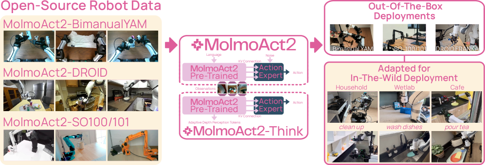
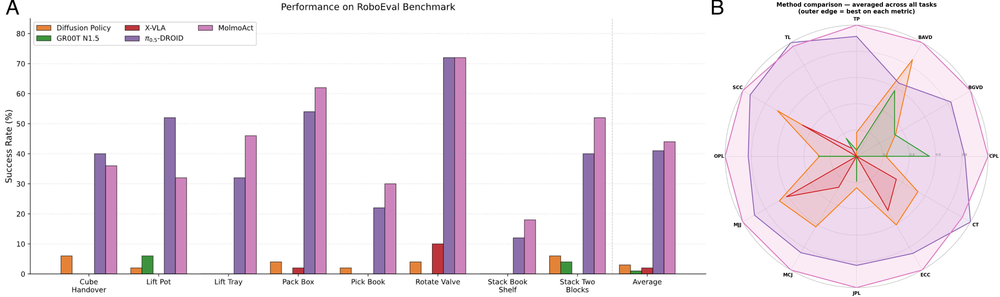

Executive Summary
2026년 5월, 비영리 연구기관 Allen Institute for AI(Ai2)가 로봇 파운데이션 모델 MolmoAct 2를 공개했습니다. 눈길을 끈 것은 성능 수치가 아니라 무엇을 함께 열었는가였습니다. 대부분의 로봇 모델이 가중치 파일만 풀고 학습 데이터는 닫아두는데, MolmoAct 2는 모델 가중치는 물론 720시간 분량의 양손 조작 로봇 데이터, 학습 코드, 평가 절차까지 통째로 공개했습니다. 누구든 그대로 돌려보고 뜯어고칠 수 있는 첫 로봇 모델인 셈입니다.
720시간이라는 숫자가 중요한 이유는 양손 로봇이 데이터 부족에 시달려 온 분야이기 때문입니다. 두 팔이 서로를 보며 협응해야 하는 동작은 팔 하나짜리 데이터를 두 배로 늘린다고 배워지지 않습니다. MolmoAct 2가 공개한 데이터셋은 34,500개의 실제 시연으로 이뤄져 1세대보다 30배 커졌고, 지금까지 공개된 양손 조작 데이터 중 가장 큽니다. 이것이 곧장 성능으로 이어져, 실세계 로봇팔 테스트에서 사전 미세조정 없이 평균 87.1%의 성공률을 기록했습니다.
그래서 주목할 변화는 분명합니다. 로봇 파운데이션 모델 경쟁의 전선이 아키텍처에서 데이터 개방으로 옮겨가고 있습니다. 가중치 공개는 흔해졌지만 데이터 공개는 여전히 드뭅니다. 누가 데이터를 쥐고 누가 여는가 하는 질문이, 앞으로 이 시장의 판도와 데이터 주권을 가를 변수입니다.
주요 수치
MolmoAct 2를 요약하면 네 개의 숫자가 남습니다. 무엇을 얼마나 열었고(720시간 데이터), 그 결과 실세계에서 얼마나 잘 작동했으며(87.1% 성공률), 1세대보다 얼마나 빨라졌고(37배), 공개 직후 얼마나 빠르게 번졌는지(40만 다운로드). 개방의 폭과 그 결과가 이 네 숫자에 압축돼 있습니다.
720시간
공개된 양손 데이터
34,500개 실제 시연 — 공개 양손 조작 데이터 중 최대 규모
87.1%
실세계 성공률
Franka 로봇팔에서 per-task 미세조정 없이(zero-shot) 기록
37배
추론 속도 향상
액션 호출 6,700ms → 180ms로 단축(1세대 대비)
40만+
출시 직후 다운로드
공개 수 주 만에 누적된 내려받기 횟수
가중치만 여는 '오픈소스'의 빈칸
지난 2년 사이 "오픈소스 로봇 모델"이라는 말이 부쩍 흔해졌습니다. NVIDIA의 GR00T, Physical Intelligence의 π0.5, Google DeepMind의 Gemini Robotics가 차례로 등장하며 로봇 파운데이션 모델 경쟁이 본격화됐습니다. 그런데 이들이 말하는 '공개'를 한 꺼풀 벗겨 보면, 대개 공개된 것은 모델 가중치 파일뿐입니다. 그 가중치가 어떤 데이터로 학습됐는지, 그 데이터를 어떻게 모으고 골랐는지는 거의 예외 없이 닫혀 있습니다.
이 차이는 생각보다 큽니다. 가중치만 받으면 모델을 그대로 쓸 수는 있어도, 왜 그렇게 행동하는지 따져보거나 내 환경에 맞게 처음부터 다시 학습시키기는 어렵습니다. 학습 데이터가 없으면 결과를 재현할 수도, 약점을 진단할 수도, 더 나은 버전으로 개량할 수도 없습니다. 가중치는 완성된 요리이고, 데이터는 레시피와 재료입니다. 요리만 받아서는 같은 맛을 다시 낼 수 없습니다.
주요 모델의 개방 범위를 나란히 놓으면 빈칸이 어디에 몰려 있는지 한눈에 들어옵니다. 가중치 열은 채워져 있어도, 데이터 열은 대부분 비어 있습니다.
| 모델 | 개발 주체 | 가중치 | 학습 데이터 | 코드·평가 |
|---|---|---|---|---|
| MolmoAct 2 | Ai2 (비영리) | 완전 공개 | 완전 공개 (720h) | 완전 공개 |
| GR00T N1.7/N2 | NVIDIA | 상업 라이선스 | 비공개 | 부분 |
| π0.5 | Physical Intelligence | 부분 (openpi) | 비공개 | 부분 |
| Gemini Robotics 1.5 | Google DeepMind | API만 | 비공개 | 비공개 |
| OpenVLA · Octo | Stanford · UC Berkeley | 완전 공개 | 공개 (Open X-Embodiment) | 완전 공개 |
대표적인 예가 NVIDIA GR00T입니다. EgoScale이라는 2만 시간 규모의 방대한 데이터로 학습했다고 알려져 있지만, 정작 그 데이터는 외부에 공개되지 않았습니다. 모델은 받을 수 있어도 그 모델을 빚어낸 재료는 손에 닿지 않습니다. 학계 출신인 OpenVLA와 Octo가 데이터까지 공개한 선례가 있긴 하나, 상업적 무게를 가진 최신 모델 중에서 데이터를 통째로 연 사례는 그동안 비어 있었습니다.

핵심: "가중치 공개 = 오픈소스"라는 통념에는 빈칸이 있습니다. 데이터를 닫아두면 재현도, 진단도, 개량도 막힙니다. 진짜 개방의 척도는 가중치가 아니라 그 가중치를 만든 데이터를 함께 여는가에 있습니다.
MolmoAct 2가 실제로 연 것들
MolmoAct 2가 공개한 데이터셋의 핵심은 720시간 분량의 양손 조작(bimanual manipulation) 시연입니다. 양손 조작이란 두 팔이 서로를 의식하며 함께 움직여야 하는 작업을 말합니다. 옷을 개고, 엉킨 케이블을 풀고, 식탁을 치우고, 약을 포장하는 일처럼 사람에게는 쉽지만 로봇에게는 까다로운 동작들이죠. 한 팔이 잡고 있는 동안 다른 팔이 정확히 맞춰 움직여야 하기 때문에, 팔 하나짜리 데이터를 아무리 모아도 이 협응은 배워지지 않습니다.

그래서 양손 조작은 늘 데이터 부족이 병목이었습니다. MolmoAct 2의 데이터셋은 34,500개의 실제 로봇 시연을 28개 이상의 일상 작업에 걸쳐 담아, 1세대의 22시간짜리 데이터보다 30배 이상 커졌습니다. 단순히 양이 많은 게 아니라, 그동안 유료로도 구하기 어려웠던 종류의 데이터를 누구에게나 무료로 푼 것입니다.
데이터의 양은 성능으로 드러났습니다. 시뮬레이션 가정 작업에서 MolmoAct 2 계열은 20.6%의 성공률을 기록해 π0.5의 10.3%를 두 배 가까이 앞섰고, 실제 Franka 로봇팔로 옮겨도 작업별 미세조정 없이 평균 87.1%를 달성했습니다. 사과를 접시에 옮기는 작업은 100%, 빨간 큐브 집기는 93.3%를 기록했습니다. 제3자 평가에서도 8개 양손 작업 중 7개에서 1위를 차지하며 OpenVLA·π0.5·X-VLA를 모두 제쳤습니다.

속도도 함께 좋아졌습니다. 1세대가 한 번의 동작을 결정하는 데 6,700밀리초가 걸렸다면, MolmoAct 2는 같은 일을 180밀리초에 해냅니다. 37배 빨라진 셈이고, 로봇이 실시간으로 움직이려면 반드시 넘어야 했던 문턱입니다. 이렇게 완성된 모델은 Hugging Face의 LeRobot에 곧바로 통합돼, 공개 수 주 만에 40만 회 넘게 내려받아졌습니다.
실험실 데모에 그치지 않았다는 점도 눈여겨볼 만합니다. 스탠퍼드 의대의 한 연구실은 MolmoAct 2를 CRISPR 유전자 편집 실험의 반복 조작을 자동화하는 데 시험했습니다. 카메라 가림이나 미세 조작 같은 한계는 남았지만, 통제된 실험실 환경 밖의 실제 작업에서 가능성을 확인한 초기 사례입니다.
왜 Ai2만 데이터까지 열 수 있었나
영리 기업에게 학습 데이터는 가장 비싼 자산입니다. 양손 조작 데이터 한 시간을 모으려면 실제 로봇과 사람의 손이 필요하고, 품질을 관리하며 수백 시간을 쌓는 일은 막대한 비용입니다. 그 데이터를 공개한다는 것은 경쟁사가 같은 출발선에 서도록 돕는 것과 같습니다. GR00T나 π0.5가 가중치는 일부 풀면서도 데이터를 닫아둔 데에는, 데이터가 곧 경쟁 우위라는 단순한 계산이 깔려 있습니다.
Ai2는 이 계산에서 자유로운 위치에 있습니다. 비영리 연구기관이라 상업적으로 데이터를 지킬 인센티브가 약하고, 오히려 투명성과 재현성이 기관의 존재 이유에 가깝습니다. 데이터를 공개하면 다른 연구자가 같은 결과를 다시 만들어 검증하고, 약점을 찾아내고, 더 나은 방향으로 고쳐 나갈 수 있습니다. 이것은 비용이 아니라 미션의 실현입니다.

특히 학습 데이터를 여는 일에는 성공뿐 아니라 실패까지 드러난다는 가치가 있습니다. 모델이 어디서 막히는지, 어떤 작업에서 데이터가 부족했는지가 데이터 자체에 고스란히 남기 때문입니다. 가중치만 받은 사람은 모델이 틀려도 그 이유를 짐작만 할 수 있지만, 데이터를 함께 받은 사람은 원인을 추적하고 보완할 수 있습니다. 재현 가능성은 곧 개량 가능성이고, 개량 가능성은 곧 생태계의 속도입니다.
인센티브의 차이: 영리 기업에게 데이터 공개는 경쟁 우위의 포기입니다. 비영리 Ai2에게는 미션의 실현입니다. 같은 행동이 누구에게는 손실이고 누구에게는 목적이라는 이 비대칭이, 왜 데이터까지 연 모델이 그동안 드물었는지를 설명합니다.
데이터가 해자가 될 때
앞서 페블러스는 GR00T·Gemini·π의 로봇 파운데이션 모델 아키텍처를 비교한 적이 있습니다(VLA 아키텍처 비교). 그 글이 "로봇의 뇌를 어떻게 설계하는가"를 다뤘다면, MolmoAct 2가 던지는 질문은 그다음 장에 있습니다. 뇌를 어떻게 짜느냐 못지않게, 그 뇌를 무엇으로 가르치느냐가 중요해진 것입니다. 아키텍처는 논문으로 빠르게 공유되지만, 학습 데이터는 그렇지 않습니다.
그래서 로봇 AI 시장에서 진짜 해자(moat)는 모델 구조가 아니라 데이터로 옮겨가고 있습니다. 비슷한 아키텍처는 금세 따라잡히지만, 수백 시간짜리 양질의 조작 데이터를 모으는 일은 시간과 비용이 그대로 진입 장벽이 됩니다. 누가 데이터를 쥐고 있느냐가 곧 누가 더 나은 로봇을 만들 수 있느냐로 이어집니다. MolmoAct 2의 데이터 공개는 이 장벽을 한 번 낮춰 보인 사건입니다.
여기서 데이터 주권이라는 질문이 자연스럽게 따라옵니다. 로봇 학습 데이터를 누가 보유하고 누가 통제하는가는, 대규모 언어 모델에서 학습 데이터의 출처와 권리를 둘러싸고 벌어진 논쟁과 본질적으로 같은 문제입니다. 한 나라의, 한 기업의 로봇 산업이 외부에서 받은 닫힌 모델에만 의존한다면, 그 모델이 무엇으로 학습됐는지 알 수 없고 자국 환경에 맞게 다시 빚을 수도 없습니다. 데이터 개방은 단지 친절이 아니라, 누가 로봇 AI의 미래를 스스로 만들 수 있느냐의 문제입니다.
Ai2 한 곳의 결정이 업계 전체의 관행을 단번에 바꾸지는 않을 것입니다. 다만 데이터까지 연 모델이 성능에서도 앞설 수 있다는 사실을 보여 준 것만으로, "데이터는 닫는 게 당연하다"는 전제에는 금이 갔습니다. 다음 로봇 모델을 평가할 때 우리가 던질 질문도 한 칸 옮겨갈 것입니다. 가중치를 공개했는가가 아니라, 그 가중치를 만든 데이터까지 공개했는가.
Editor's Note
페블러스는 데이터가 모델을 만든다는 관점에서 AI-Ready Data를 다뤄 왔습니다. 로봇 학습 데이터의 품질과 주권 문제는 언어 모델 데이터 거버넌스와 뿌리가 같습니다. MolmoAct 2가 보여 준 "데이터 개방"의 가치는, 데이터를 어떻게 모으고 정제하고 신뢰할 수 있게 관리하느냐가 곧 경쟁력이라는 우리의 문제의식과 맞닿아 있습니다.
참고문헌
학술 논문
- 1.Gu, J. et al. (2026). "MolmoAct 2: Action Reasoning Models for Real-world Deployment." arXiv:2605.02881. Allen Institute for AI.
- 2.NVIDIA Research. (2025). "GR00T N1: An Open Foundation Model for Generalist Humanoid Robots." arXiv:2503.14734.
공식 발표
- 3.Allen Institute for AI. (2026, May 5). "MolmoAct 2: Open Robot Foundation Model." Ai2 공식 블로그.
- 4.Allen Institute for AI. (2026). "allenai/molmoact2." GitHub.
업계 보도
- 5.SiliconAngle. (2026, May 5). "AI2 releases MolmoAct 2, enhancing robot intelligence for real-world tasks."
- 6.TechTimes. (2026, May 25). "Open-Source Robotics Model MolmoAct2 from AI2 Beats π0.5, Releases 720-Hour Bimanual Dataset."